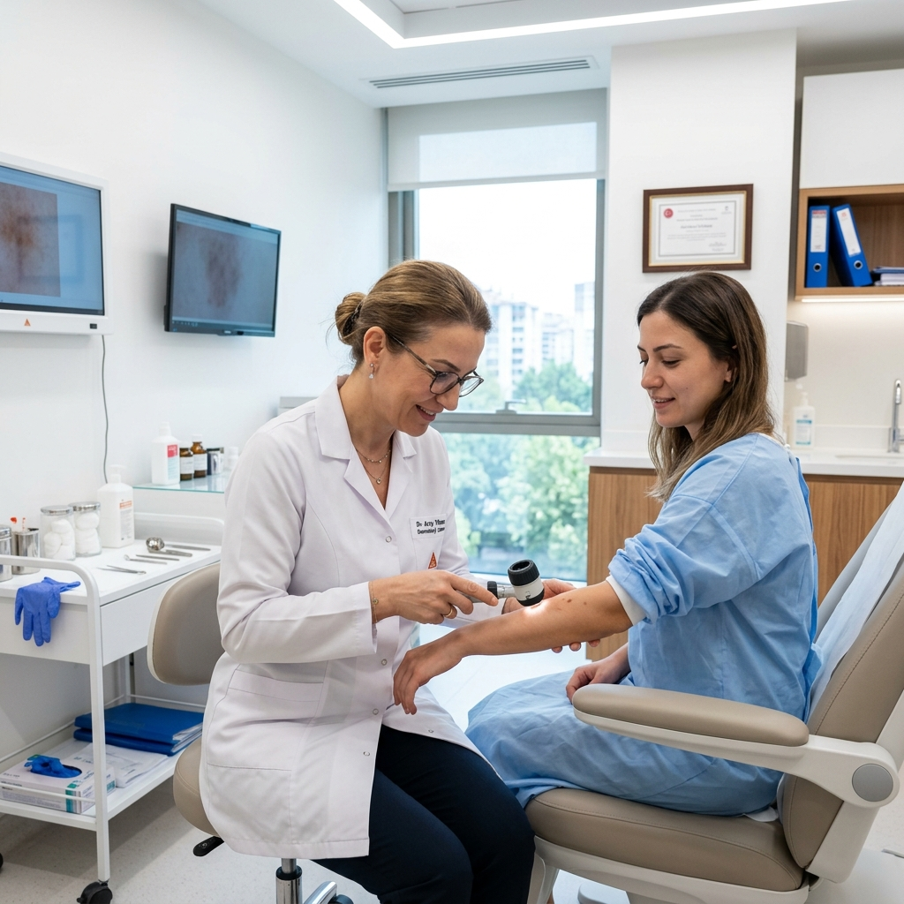

TR
|
EN
0328 813 50 10
Uzman branşlarımız, ileri teknolojik altyapımız ve bilimsel yöntemlerle sunduğumuz sağlık departmanlarını inceleyin.

Kalp yetersizliği, koroner damar tıkanıklıkları, ritim bozuklukları ve hipertansiyon tanı ve tedavileri modern ekokardiyografi laboratuvarlarımızda sunulmaktadır.

0-18 yaş grubundaki çocukların rutin büyüme gelişme takibi, beslenme rehberliği, aşı takipleri ve çocukluk çağı hastalıklarının tedavisi uzman hekimlerce yapılır.

Migren başta olmak üzere baş ağrıları, Parkinson, Alzheimer, inme, epilepsi ve kas-sinir hastalıkları ileri tıbbi cihazlar eşliğinde teşhis ve tedavi edilmektedir.
Eklem kireçlenmeleri, diz-kalça protez ameliyatları, spor yaralanmaları, bağ kopmaları ve travmatik kırık-çıkık ameliyatları başarıyla gerçekleştirilmektedir.

Egzama, sedef, akne tedavileri, bilgisayarlı dermatoskopi ile ben takipleri, saç dökülmesi tedavileri ve estetik-kozmetik dermatolojik uygulamalar sunulmaktadır.

Fıtıklar, safra kesesi hastalıkları, mide ve bağırsak cerrahisi, laparoskopik kapalı yöntemlerle ve konforlu ameliyat sonrası süreçlerle gerçekleştirilir.

Katarakt ameliyatları (akıllı mercek), lazer cerrahisi, glokom (göz tansiyonu) takibi and rutin göz ölçümleri son jenerasyon cihazlarla yapılmaktadır.

Yüksek çözünürlüklü MR (1.5 Tesla), bilgisayarlı tomografi, ultrasonografi, renkli doppler ve dijital röntgen tetkikleri uzman hekimlerimizce raporlanır.
İbni Sina Hastanesi olarak, şifa dağıtma yolculuğumuzda modern tıbbın tüm imkanlarını insani dokunuş ve sevgiyle harmanlıyoruz. Bizim için en değerli başarı, yüzünüzdeki sağlıktır.

Hekim arama sayfamızdan aradığınız uzmanlığa göre doktor seçimi yapabilir veya çağrı merkezimizi arayarak destek alabilirsiniz.